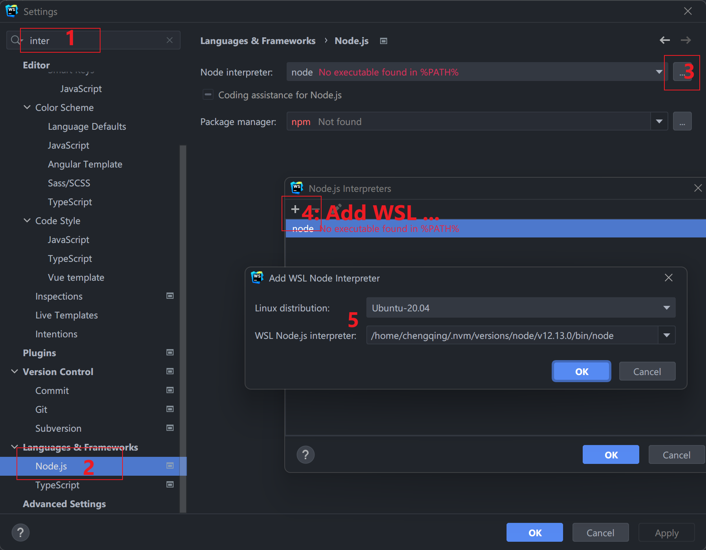

一篇平平无奇的WSL使用推荐指南。在本篇中，不会讨论什么是WSL，如何安装WSL，单纯地分享我是如何使用WSL进行日常开发的。
我当前是使用的WSL配置如下：
1 | NAME STATE VERSION |
我习惯使用大量的CLI来提升自己的工作效率以及使用体验，因此一个好用的Terminal和一系列高效率的CLI工具对我是十分重要的。
WSL 配置
文件的权限问题，解决方法参考[长期更新] WSL使用记录
配置git，执行下面命令之后，使用https clone的代码就不用经常输入用户名密码了。
1 | git config --global credential.helper store |
WSL中Git的默认编辑器对于我来说不咋好用，我比较喜欢使用vim。可以使用下面的命令更改默认编辑器：
1 | git config --global core.editor vim |
CLI工具
Terminal
在Windows上面，我推荐使用 Windows Terminal （下载链接）。推荐理由：
- 微软官方开发维护。
- 可以根据自己的使用习惯定制化。
- 可以在WSL，PowerShell，CMD，Azure Cloud Shell之间切换。
Zsh
ubuntu 里面默认提供的是Bash，不是特别适合日常使用。相较于Bash，Zsh更加适合交互，比如如下功能：
- 无需
cd也可以切换目录，在Bash需要使用cd projects，在Zsh下直接projects就行了。 - 扩展路径，比如输入
/u/loc然后Tab，就会变成/usr/local/。 - 支持插件和主题。
如何安装Zsh
1 | sudo apt-get install zsh -y |
如果想知道更多有关Zsh的知识，请阅读官方文档。
Oh My Zsh
Oh My Zsh 是一个开源的管理Zsh配置的框架。在其GitHub的Readme中有一句很有意思的话，Oh My Zsh will not make you a 10x developer…but you may feel like one.
如何安装Oh My Zsh：
1 | sudo apt-get install wget -y |
我使用的是Oh My Zsh的默认主题，如果想更改主题，请阅读 Readme.
Oh My Zsh 插件
插件是一个重头戏，利用插件可以提升我们的工作效率。
autojump 是一个小工具，可以帮助我们快速导航到一个目录中，支持模糊匹配。比如有一个目录名称我记得其中包含了 hexo 而且我曾经进入过，那么我就可以使用 j hexo 尝试进入。强烈推荐。
安装方式：
1 | sudo apt-get install autojump -y |
安装完之后，修改 ~/.zshrc
1 | plugins=(git autojump) |
git 支持git的插件时oh-my-zsh 默认添加了的，提供了很多简写的别名。比如我常用的 gst 就是 git status 的别名。更多别名，请参考 ohmyzsh/plugins/git。
Oh My Zsh还支持很多插件，详情请参考Plugins。
Homebrew
Homebrew 是一个包管理器。Homebrew也提供了很多有用的cli工具，我使用Homebrew 的原因是我公司配置的电脑是Macbook，在WSL中继续使用该工具，可以给我带来一致性的体验。而且Homebrew自己开发CLI工具，安装等相比于apt更加方便。
安装方式：
1 | /bin/bash -c "$(curl -fsSL https://raw.githubusercontent.com/Homebrew/install/HEAD/install.sh)" |
更多使用方式，请参考The Missing Package Manager for macOS (or Linux) — Homebrew
tig
在使用git的过程中，本地看提交记录，或者reset的时候找起点等等情况下，如果使用 git log 就会很难受，tig完美地解决了这个问题，还能快速浏览每一个提交的内容等。
安装方式：
1 | sudo apt-get install tig -y |
语言开发环境管理
这里只是列举了一些，我使用过的管理工具，其它语言请自行探索。
| 语言 | 管理工具 | 安装方式 | 文档 |
|---|---|---|---|
| Java | jenv | brew install jenv | jenv/jenv: Manage your Java environment |
| Node.js | nvm | wget -qO- https://raw.githubusercontent.com/nvm-sh/nvm/v0.39.1/install.sh | bash | nvm-sh/nvm: Node Version Manager - POSIX-compliant bash script to manage multiple active node.js versions |
| Ruby | rbenv | brew install rbenv | rbenv/rbenv: Manage your app’s Ruby environment |
| Python | pyenv | brew install pyenv | Simple Python version management (from pyenv) |
与JetBrains IDE集成
与JetBrains IDE集成，需要做两件事情。
- 切换Terminal，默认的是CMD。为了更好的体验，可以切换到wsl.
Settings → Tools → Terminal , 在 Application Settings 中 Shell path 改成 wsl .
- 设置SDK，以 WebStorm为例。
VS Code
- 在vscode中安装扩展插件
Remote Development Ctrl + Shift + P, 输入shell command, 执行Install 'code' command in PATH command- 在WSL中就可以使用vscode了，比如
code .在vscode中打开当前目录。